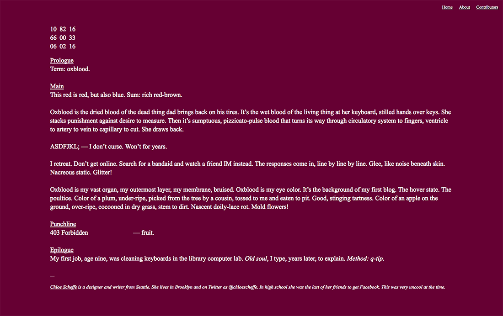

Chloe Scheffe
Graphic design, etc.
#660033
Writing
2016
Websafe 2k16 is a collection of writings by artists about the early Internet. I was invited to select one of the 216 original web safe colors and write 216 words about it. My pick was #660033.
Read the piece at
Websafe 2k16
.
